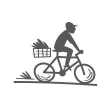
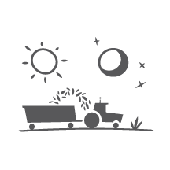

位於墨西哥西南部的紐崔萊培塔可農場，佔地645公頃（1,589英畝），將近一千座足球場的大小。
你可以觀看我們的直播，親眼見到──每一天、每一小時都有直播！現在就去看直播。但首先，讓我們告訴你更多故事……

紐崔萊自然純淨
在墨西哥農場，我們只使用天然肥料，確保作物的純淨。

我們每天都會對土壤進行檢測，這樣才能清楚掌握灌溉的水量，種出最健康的植物。
為了避免揚起塵土、污染到作物原料，土壤檢測員不搭乘大型農地交通工具，而是騎腳踏車穿梭於田地之間，一天檢測45個地點。

紐崔萊產品安全
為了保證安全，永遠有人在看守。為保護作物，我們確切掌握在什麼時間有誰來接觸作物、接觸了多久。這表示每天24小時都有38台攝影機在運作，記錄每一個動作。（新增直播後變成39台了！）
同時我們每天晚上都會對每一件農具進行消毒，來對抗微生物和作物間的污染。在我們的監控之下不會有髒污。
我們的植物也需要通過嚴峻的測試，從土壤中的種子開始，一直到加工和包裝。

紐崔萊高效營養
我們永遠不會停止追求進步。我們的墨西哥農場有12英畝的面積是用來研究哪些種子種類可以生長出含有最多植物營養素、數量最多的作物，這樣我們就可以為你提供最有效的產品！

我們也研究收成作物的最佳時機，以獲得最多的植物營養素。太早或太晚，對於紐崔萊來說都不夠好。作物一經收成，就會在24小時之內進行加工，以維持它們的效益。
直播

看看現在農場上正在做什麼！
Much to our surprise, lightning struck our camera less than one week after it was installed. Please be patient with us as we work to replace it. Enjoy this video of the farm until we’re able to go live again with our signal.